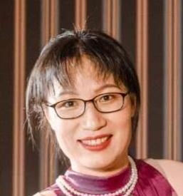
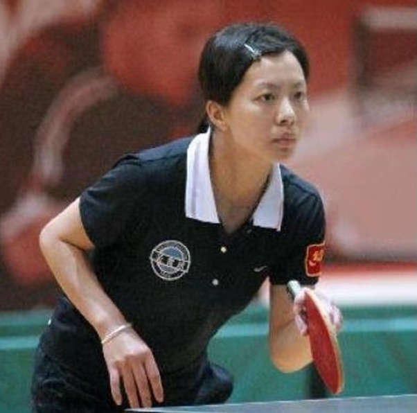

About
Mission
Board Members
UDCA President Emeritus
Liu, Shuhong (刘树红)
UDCA President

Liang, Ling (梁玲)
Co-President

Kong, Xinkai (孔馨凯)
Vice Presidents

Zhao, Zhigen (赵志根

Chen,Yuzhen (陈玉贞)
Wang, Yang (汪洋)
Li, Ying (李缨)
Jiang, Tianying (蒋天滢)
Jiang, Yongjiong (姜永炅)
Zhu, Yajing (朱雅静)
Treasurers
Chen,Yuzhen (陈玉贞)
Zhao, Zhigen (赵志根)
Fundraiser
Jiang, Yongjiong (姜永炅)
Outreach/School Coordinators
Zhu, Yajing (朱雅静)
Jiang, Tianying (蒋天滢)
Event Coordinators
Zhao, Zhigen (赵志根)
Jiang, Tianying (蒋天滢)
Li, Ying (李缨)
Zhang, Ling (章玲)
Lee, Annie (李超娟)
Wang, Meihua (王美华)
Jia, Gang (贾刚)
Wu, Jibo (吴继波)
Technology
Wang, Yang (汪洋)
Jiang, Yongjiong (姜永炅)
Student Awards
Wang, Cheng (王澄)
Liu, Shuhong (刘树红)
Liang, Ling (梁玲)
President's Welcome
I am honored to follow in the footsteps of Presidents Shuhong Liu and Xinkai Kong and become the 4th UDCA President. I was a high school physics teacher about 40 years ago and am currently a college professor in teacher education. I moved to Upper Dublin in 2011 and have served on the UDCA board since 2013. More recently, I have become interested in conversations related to Diversity, Equity, Inclusion, and Belonging, from an Asian American Pacific Islander (AAPI) perspective. While serving as a co-chair of the UDSD Asian American Students and Families Committee, I worked with Dr. Cynthia Song and other community members to initiate the inaugural district-wide AAPI Heritage Month Celebration event in 2017. In May of 2022, supported by a group of enthusiastic UDCA students and parents, Dr. Jianhua Zhao and I co-founded an Intercultural Club, aiming to promote a deeper understanding and mutual respect among our communities by engaging in culture-related activities, service, learning, and education. I am also passionate about the integration of AAPI aspects into curriculum and instruction, as well as the development of our children’s soft skills, leadership skills, and overall well-being. I sincerely invite all UDCA members to join together on our journey. Together and by association, let’s connect and build a supportive and warm environment for our members in the community. Let’s serve, inspire, and touch the hearts. 千里之行，始于足下。Together, we are surely and steadily marching toward a brighter future!
Sincerely,
Ling Liang
President, UDCA
Archive
Covid-19 Task Force

Mask Donations/Funding
Educational Resources Database
COVID-19 Resources
Table Tennis Club
Throughout the years it served as a convenient and comfortable venue for table tennis, general fitness and other physical activity for residents of Upper Dublin and its neighboring townships. Each Tuesday evening, those table tennis enthusiasts eagerly showed up to exchange tips and discuss experiences, in addition to making new friends. Coach Ying Lu also gave brief lessons in the midst of her busy schedule, often accompanied by many jovial onlookers. Since its inception, UDCA Ping Pong Club has had a highly positive influence on many table tennis aficionados in the neighborhood, with a variety of activities in full swing. At the beginning of 2019, the club extended the rental lease with PVCCC in order to continue serving our community as a great venue for fitness, table tennis, and social activities. At the same time, the club has decided to donate all income from 2018 to UDCA in order to support and promote community services for the Upper Dublin Chinese community.

Lu, Ying
Champion of Chinese National TournamentChampion of World University Tournament
3rd place in US Open